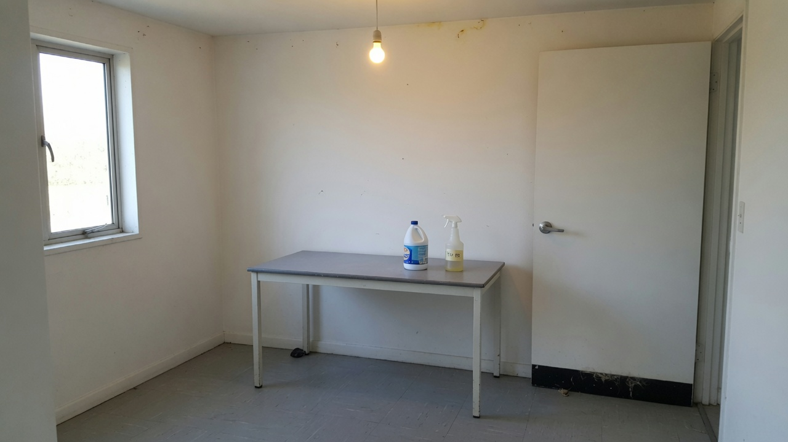

Cannabis tissue culture SOP
Do these jobs in order. Each job has a diagram and a form. A star in brackets is a source, not extra reading you need before you start.
Purpose and scope
This is the working SOP. The tissue culture playbook is the longer guide. Follow this document if you are doing the work today.
Two setups share the same jobs. Home: one room, a still-air box or a cheap hood, a pressure canner. Licensed: the same jobs plus lot numbers and a disease test.
A small [n] after a number or a rule is a source. You do not need to open it to do the step. The list is at the end.[1]
- Lot number format: YYYY-MM-DD-CULTIVAR-NN. Example: 2026-08-14-MD-01.
- One cultivar per hood session.
- If a jar is doubtful, it is dirty. Bin it. Log it on F-07.
- Do not call a plant clean unless F-10 has a negative qPCR result.
Expect to lose most of the first batch. Published start-up losses sit between 45% and 95%.[4] Write what you did. Change one thing next time.
Evidence and limitations
We've gone to great lengths to keep these guides honest. One of the main ways we do that is self-review: we actively look for claims that are subjective, only lightly backed by literature, or based on grower practice rather than a controlled study — and we call those out instead of dressing them up as settled science.
Often there simply is no paper for the decision you're making. In those cases we're drawing on what other growers report and what has worked in our own rooms. That can still be useful — but it is not a lab proof. Do what works for your plants, your room, and your meters. If a table disagrees with your crop, believe the crop and log the difference.
- Core definitions and measurement units used in the paper
- Safety-critical limits where occupational or standards sources are cited
- Numeric stage targets (light, climate, feed) as starting bands, not laws
- SOPs that work in many rooms but need your genetics and meters
- Any single-number 'guaranteed' yield or potency claim without a multi-site trial
- Controller setpoints copied from another facility without re-calibration
See something glaringly wrong? Tell us and we'll fix it. Please open a GitHub issue with the paper name and what looks off (include a source if you have one): Report an accuracy issue. Local law, labels, and licences always override any recipe here. Inline notes labelled grain of salt flag the highest-risk over-trust points in the text.
Preparing the workspace
Pick one small room or a closed corner. No carpet. No house plants. No cardboard boxes stored in it. A spare bedroom, a laundry, or a sealed cupboard bay will do.

- 1Empty itRemove plants, food, cardboard, fabric, pet beds. Wipe dust off the ceiling fittings.
- 2WashWarm water and household detergent on walls, floor, bench, door, window sill. Rinse.
- 3BleachMix 1 part household bleach (about 4–8% sodium hypochlorite) with 9 parts water. Wet surfaces for 10 minutes. Rinse. Wear gloves. Open a window.
- 4AlcoholWipe hard surfaces with 70% ethanol or isopropyl alcohol. Let it dry.
- 5SealTape obvious wall gaps. Add a door sweep if the door has a gap. Cover carpet with sealed vinyl if you cannot rip it up.
- 6Rules for the room after thisNo eating. No outdoor shoes. No cardboard storage. Door shut while you work. One person at a time at the hood.
Weekly room treatment, after you are running
- Floor and door handle: detergent, then 70% alcohol.
- Bench and hood steel: 70% alcohol at the start of every work day (Job 1).
- Bins: empty after every session. Do not leave dirty jars in the room overnight.
- If you have a UV lamp in the hood: run it only with the sash down and nobody in the room. Never look at it. Wipe the tube monthly. UV is extra. It is not a substitute for the HEPA fan.
| Date | Name | Floor | Bench | Door | Hood steel | Bin emptied | Sign |
|---|---|---|---|---|---|---|---|
| Tick each box. If you skip a box, do not start cultures that day. | |||||||
Selecting and setting up a laminar-flow hood
A still-air box works. A horizontal laminar-flow hood is easier. You can buy one from China for a few hundred dollars if you order the right spec and check it on arrival.
What the words mean
- Horizontal laminar flow. Air moves in one direction, from the filter face toward you. That is the type used for plant work. It protects the plant, not your lungs.
- HEPA H13 / H14. A filter grade. H13 stops 99.95% of 0.3 µm particles. H14 is tighter. Either is fine. “HEPA-like” and foam pads are not.
- Pre-filter. A cheap washable pad in front of the HEPA. It keeps dust off the expensive filter. If the listing has no pre-filter, skip it.
- Face velocity 0.30–0.50 m/s. How fast the clean air comes out. Slower than 0.3 is weak. Faster than 0.6 dries tissue and can bounce dirt back.
Where to search
Search these exact phrases. Open the listing. Message the seller with the checklist below before you pay.[22]
| Site | Search phrase | Link |
|---|---|---|
| AliExpress | horizontal laminar flow hood H14 HEPA | aliexpress.com/w/wholesale-laminar-flow-hoods.html |
| AliExpress example class | H13/H14 hoods around USD 260–500 | item 1005010452823851 (check current spec) |
| Alibaba | horizontal laminar flow hood H14 plant tissue culture | alibaba.com search |
| Alibaba branded class | BIOBASE clean bench / LAF | BIOBASE LAF listing |
| Prices move. Freight and a 220–240 V plug matter more than a $40 difference. | ||
Message the seller this, copy-paste
Send this as one message. If they cannot answer, do not buy.
- Is the cabinet horizontal laminar flow (not a biosafety cabinet)?
- What HEPA grade? H13 or H14? Send the EN1822 (or equivalent) certificate for this filter lot.
- Is there a separate pre-filter? What is the replacement HEPA size and price?
- What face velocity at the work opening, in m/s?
- Voltage and plug: I need 220–240 V (change this if you are on 110 V).
- Work opening width in mm? I need at least 400 mm.
- Photos of the filter gasket and the fan nameplate before shipping.
What to pay
- Desktop / mini metal hood, H13/H14, 400–700 mm wide: often USD 260–700 plus freight.
- Full clean bench (BIOBASE class): often USD 800–2,000 plus crate freight.
- A used Athena-style portable hood from the second-hand market can cost more than a new Chinese bench. Compare the filter spec, not the logo.
Cardboard mushroom boxes with a furnace filter. Vertical “nail salon” tables with no HEPA grade. Anything that says HEPA but shows a foam sheet. A biosafety cabinet unless you already know you need operator protection. It is the wrong tool and costs more.
When it arrives
- 1InspectHEPA frame not crushed. Plastic still on the filter face. No rattle in the fan.
- 2PlaceLevel, solid bench. 30 cm of free air behind or below the intake, depending on the model. Do not push it into a curtain.
- 3PowerRead the plate. 220–240 V units die on 110 V. Use a surge-protected board.
- 4First runEmpty hood. Fan on 30 minutes. Listen. Smell for burning.
- 5Flow checkHold a thin tissue strip in the work opening. It should lean steadily toward you (horizontal hood). If it flaps, flaps back, or hangs dead, message the seller before first use.
- 6Wipe70% alcohol on painted steel and the work tray. Never spray liquid into the HEPA face.
- 7Optional smokeA stick of incense 20 cm in front of the filter. Smoke should leave in one sheet, no swirls back onto the bench.
- 8LogFill F-12. If the tissue hangs dead, do not plate plants.
| Date | Hours run | Tissue-strip pass? | Noise / smell | Pre-filter cleaned? | Sign |
|---|---|---|---|---|---|
| Do this on first setup, then monthly, and after any filter change. | |||||
Use a still-air box: a clear tub on its side, two arm holes, 70% alcohol wipe, fans off. Same jobs. Slower. Cheaper. The SOP steps do not change.
Opening procedure
Do this every day you work, before any jar is opened.
- 1ClothesClean long sleeves. Hair tied. No outdoor shoes in the room. Licensed lab: gown, hair cover, gloves. Log F-13.
- 2Hood onEmpty. 20 minutes. If the fan sounds new or burnt, stop.
- 3F-01Floor, bench, door, hood steel, bin.
- 4GlovesNew nitrile. Spray 70% alcohol. Spray again after you leave the room.
- 5Load the hoodToday’s closed jars, tools, waste bag on the left. Nothing else.
| Date | Time in | Gown | Hair cover | Gloves | Jewellery off | Time out | Sign |
|---|---|---|---|---|---|---|---|
Mix medium, autoclave, hold 7 days
One litre. Full-strength MS for start and multiply. Half-strength MS if you are rooting in gel.
| Ingredient | 1 litre | Notes |
|---|---|---|
| RO or distilled water | start 800 mL, top to 1 L | Not tap |
| MS basal salts | 4.4 g | Half = 2.2 g for many rooting mixes |
| Sucrose | 30 g | Table sugar is fine |
| myo-Inositol | 0.1 g | Skip only if your MS already has it |
| Activated charcoal | 1 g optional | Helps with browning[1] |
| Agar | 6–8 g; 9.5 g if shoots go glassy | [4] |
| PPM (optional) | 0.5–2 mL | Label rate. Not a meristem.[16] |
| pH | 5.6–5.8 before agar | Then autoclave |
| If you want | Add this after you know MS works | Dose |
|---|---|---|
| Start (classic) | TDZ + NAA | 1 µM + 0.5 µM[1][2] |
| Start (gentler) | meta-Topolin | 0.48 mg/L[3][4] |
| Long multiply | No hormone + extra calcium | Ca nitrate 0.71 g/L + Ca gluconate 1.35 g/L[4] |
| Root in gel | IBA | 5 µM. More is worse.[1] |
- 1WeighWrite every mass on F-03 before you pour.
- 2pH5.6–5.8 before agar. Dilute acid down. Dilute base up.
- 3Agar + heatDissolve. Pour jars one-third full. Lids loose.
- 4AutoclaveStovetop canner that holds 15 psi, or an autoclave. 121 °C, 15 psi, 20 minutes. Instant Pots do not count. Jars on a rack, not drowned.
- 5CoolTighten lids when cool enough to handle. Label lot number on every jar.
- 6HoldShelf 7 days. Any cloud or fuzz: bin the whole lot. Do not plate into it.
| Date | Load ID | 121 °C? | 15 psi? | 20 min? | Cool / dry | Fail? | Sign |
|---|---|---|---|---|---|---|---|
| If any of 121 / 15 / 20 is no, discard the load. | |||||||
| Lot no. | Date | MS g | Sugar g | Agar g | pH | Hormone | PPM mL | Jars n | Day-7 clear? | Sign |
|---|---|---|---|---|---|---|---|---|---|---|
| Lot no. = YYYY-MM-DD-MED-NN. Carry this number onto F-04. | ||||||||||
Explant preparation and surface sterilisation
First runs: a stem piece with one bud, 10–15 mm. Not a meristem.
- 1MotherVegetative. Scouted. Young if you can. One cultivar.
- 2CutMorning. 10–15 mm. Strip large leaves. Keep wet.
- 3Soap washTap water + a drop of dish soap or Tween-20. 10–20 min.
- 470% alcohol30–60 seconds. Drain.
- 5
- 6RinseSterile water, three times, 3–5 min each. Then into the hood.
- 7TrimCut off white or cooked ends. That cut face goes into the gel.

Plating, labelling and incubation
One piece, one jar, until you know your rate.
- 1Air streamWork 10–20 cm in front of the filter, not at the very edge.
- 2One lidFace down to the side. Never above the jar.
- 3PlantCut base in the gel. Bud above.
- 4LidOn at once. Do not talk over the jar.
- 5LabelCultivar, date, explant type, lot number from F-03.
- 6Shelf24–26 °C. 16–18 h light. About 70–100 µmol m⁻² s⁻¹. Do not open to look.
| Lot no. | Cultivar | Explant | n plated | Medium lot | Date | Day-7 clean n | Day-21 clean n | Sign |
|---|---|---|---|---|---|---|---|---|
| n plated must equal what you put in. Day-7 + dumped = n plated. | ||||||||
Culture inspection and disposal
Day 7 and day 21. Look through the glass. Do not open a doubtful jar.


| Date | Lot no. | Jar ID | Bacteria / fungus / brown / glass | Action (bin / watch) | Sign |
|---|---|---|---|---|---|
| Every dumped jar gets a line. This is how you see if technique is improving. | |||||
Shoot multiplication and subculture
Only from jars that were clean at day 21. New jar every time.

- 1SourceA day-21 clean jar. One cultivar.
- 2Cut15–25 mm shoot tip or a node with a visible bud.
- 3New jarSame medium or the no-hormone + calcium mix.[4]
- 4DensityHome: 1–3 per jar. Licensed: what your F-07 rate allows.
- 5Clock3–4 weeks. Restart the line from a tested mother by about five recuts.[9]
| Date | From lot | New lot | Cultivar | n moved | Medium lot | Day-21 clean n | Sign |
|---|---|---|---|---|---|---|---|
Meristem dissection after process validation
Microscope. 0.2–0.4 mm. Then a lab test. This job does not make a plant “clean” by itself.


- 1New flush10–15 mm vegetative tip. Strip large leaves before the hood.
- 2Sterile toolsBeads ~250 °C, 20 s, then cool.
- 3DishOne drop sterile water. 10–20× then 30–40×.
- 4PeelOuter leaves off. Stop at two tiny leaves.
- 5Bleach that tipShorter bleach than a woody node. Rinse.
- 6
- 7Wait4–8 weeks. Then F-10. Expect about 41% negative at six months, not 100%.
| Date | Mother ID | n tips | n plated | Medium lot | n alive wk 8 | F-10 result | Sign |
|---|---|---|---|---|---|---|---|
Rooting and acclimatisation
A shoot with no roots is not a plant. After roots, lower humidity in steps.


- 1Pick2–4 cm shoot. Not glassy. Not brown.
- 2
- 3PlugRockwool or coco soaked in mild veg nutrient, pH about 5.8.
- 4DomeMist the walls. 16 h light. Gentle. 24 °C.
- 5VentsDay 7 half. Day 9 full. Day 14 lid off.
- 6PotTreat as a new clone. No 12-hour days for several weeks.
| Date | From lot | Method (gel / dip / no-sugar) | n | n rooted wk 4 | Sign |
|---|---|---|---|---|---|
| Date out | Lot | Plug type | n | n alive day 14 | Sign |
|---|---|---|---|---|---|
Testing, intake and lot registration
If F-10 is blank, the plant is a clone. Not a clean mother.
- 1SampleNew fully expanded leaf or the leaf stalk, after the plant has grown.
- 2LabA lab that runs cannabis Hop latent viroid RT-qPCR. Roots are the most reliable tissue if they will take them.
- 3Retest3–4 weeks later, and before a mother enters production.
- 4RetainFreeze spare tissue from every pass lot.
| Date | Plant / lot | Tissue | Lab | HpLVd | Other | Retain ID | Pass? | Sign |
|---|---|---|---|---|---|---|---|---|
| Pass = not detected. Anything else = quarantine or destroy. Do not write “clean” in this column. | ||||||||
| Date in | Cultivar | Source | Room | Pests? | F-10 date | F-10 result | Release / destroy | Sign |
|---|---|---|---|---|---|---|---|---|
| Lot no. | Opened | Closed | Cultivar | F-03 | F-04 n | F-07 dumped | F-10 | Fate |
|---|---|---|---|---|---|---|---|---|
| One line per lot. Fate = multiply / root / mother / destroy. | ||||||||
70% alcohol does not destroy Hop latent viroid RNA. Use 5–10% household bleach for 1–2 minutes, or 1000 ppm hypochlorous acid for 1 minute, then rinse.[6] Dedicated blades per cultivar if you can.
Weekly operating schedule
| Day | Home | Licensed |
|---|---|---|
| Mon | F-01. Pour Sunday’s medium. | F-01 + F-13. Media kitchen: F-02, F-03. |
| Tue | Plate 10–20 nodes. F-04. | Plate from F-11 released mothers only. |
| Wed | Multiply day-21 cleans. F-05. | One cultivar per hood. F-05. |
| Thu | Scout. F-07. | Scout + photo lots. F-07. |
| Fri | Root or dip. F-08. Send F-10 if due. | qPCR batch. Quarantine fails. |
| Sat–Sun | Do not open jars. | Alarms only. |
Troubleshooting
| What you see | Change this only |
|---|---|
| >50% dirty by day 7 | Slower hands. Younger mother. Smaller tip. |
| >50% dirty after day 14 | Meristem (Job 7). Optional 4–5% PPM soak.[16] Change mother substrate. |
| Brown in 48 h | Shorter bleach. Charcoal. Trim ends. |
| Glassy leaves | No cytokinin. 9.5 g/L agar. Vented lid. |
| No roots week 5 | 5 µM IBA, or a 15 mM dip, not more hormone. |
| Dies under the dome | Longer half-vent. Rockwool, not a bubbler. |
| Looks fine, duds in flower | F-10 was skipped. |
Source notes
Stars in the text point here. You do not need this page to run a day.
Photographs are illustrations. Diagrams are the ones to follow for size and order.
Only grow cannabis where you are allowed to. This SOP is horticultural, not legal advice.
References
- Holmes JE et al. (2021). Variables affecting shoot growth and plantlet recovery in tissue cultures of drug-type Cannabis sativa L. Frontiers in Plant Science, 12:732344. https://pmc.ncbi.nlm.nih.gov/articles/PMC8491305/
- Lata H, Chandra S, Khan IA, ElSohly MA (2009). Thidiazuron-induced high-frequency direct shoot organogenesis of Cannabis sativa L. In Vitro Cell. Dev. Biol.-Plant 45:12–19. https://doi.org/10.1007/s11627-008-9167-5
- Lata H, Chandra S, Techen N, Khan IA, ElSohly MA (2016). In vitro mass propagation of Cannabis sativa L.: a protocol refinement using novel aromatic cytokinin meta-topolin. J. Appl. Res. Med. Aromat. Plants 3:18–26. https://doi.org/10.1016/j.jarmap.2015.12.001
- Das R, Kretzschmar T, Mieog JC (2024). Importance of media composition and explant type in Cannabis sativa tissue culture. Plants 13(18):2544. https://doi.org/10.3390/plants13182544
- Atallah OO et al. (2023). Hop latent viroid: a hidden threat to the cannabis industry. Viruses / PMC. https://pmc.ncbi.nlm.nih.gov/articles/PMC10053334/
- Transmission, spread, longevity and management of hop latent viroid in cannabis in North America (2025). PMC. https://pmc.ncbi.nlm.nih.gov/articles/PMC11902214/
- Kodym A, Leeb CJ (2019). Back to the roots: protocol for the photoautotrophic micropropagation of medicinal Cannabis. Plant Cell Tiss. Organ Cult. 138:399–402. https://doi.org/10.1007/s11240-019-01635-1
- Kurtz LE et al. (2022). Ex vitro rooting of Cannabis sativa microcuttings and their performance compared to retip and stem cuttings. HortScience, 57(12):1576. https://journals.ashs.org/hortsci/view/journals/hortsci/57/12/article-p1576.xml
- Torkamaneh D et al. (2024). Somatic mutation accumulation in micropropagated cannabis is proportional to the number of subcultures. Plants, 13(14):1910. https://pmc.ncbi.nlm.nih.gov/articles/PMC11279941/
- Ioannidis K, Tomprou I, Mitsis V (2022). An alternative in vitro propagation protocol of Cannabis sativa L. presenting efficient rooting, for commercial production. Plants 11(10):1333. https://doi.org/10.3390/plants11101333
- Monthony AS, Page SR, Hesami M, Jones AMP (2021). The past, present and future of Cannabis sativa tissue culture. Plants 10:185. https://doi.org/10.3390/plants10010185
- Page SRG, Monthony AS, Jones AMP (2021). DKW basal salts improve micropropagation and callogenesis compared with MS basal salts in multiple commercial cultivars of Cannabis sativa. Botany 99:269–279. https://doi.org/10.1139/cjb-2020-0179
- Cryopreservation of shoot tips of elite cultivars of Cannabis sativa L. by droplet vitrification (2019). Medical Cannabis and Cannabinoids (Karger). https://pmc.ncbi.nlm.nih.gov/articles/PMC8489323/
- A temporary immersion system to improve Cannabis sativa micropropagation (2022). Frontiers in Plant Science. https://www.frontiersin.org/articles/10.3389/fpls.2022.895971/full
- Plant Cell Technology (2023–2024). How to tissue culture cannabis; Achieving disease-free cannabis stocks; How to sterilize your explants; Build a home tissue culture lab; PPM™ directions for use. (industry/manufacturer or non-journal source) https://plantcelltechnology.com/
- Plant Cell Technology. Plant Preservative Mixture (PPM™) product directions: 0.05–0.2% standard; 4–5% soak for endogenous load. (industry/manufacturer or non-journal source) https://plantcelltechnology.com/products/plant-preservative-mixture-ppm
- Athena Ag, Culture Kit, ROOTS/SHOOTS media, and Plant/Media/Lab Prep procedure (manufacturer documentation). (industry/manufacturer or non-journal source) https://www.athenaag.com/culture-kit
- Murashige T, Skoog F (1962). A revised medium for rapid growth and bio assays with tobacco tissue cultures. Physiol. Plant. 15:473–497. https://doi.org/10.1111/j.1399-3054.1962.tb08052.x
- Driver JA, Kuniyuki AH (1984). In vitro propagation of Paradox walnut rootstock. HortScience 19:507–509. https://doi.org/10.21273/HORTSCI.19.4.507
- Lubell-Brand JD, Kurtz LE, Brand MH (2021). An in vitro–ex vitro micropropagation system for hemp. HortTechnology 31:199–207. https://doi.org/10.21273/HORTTECH04779-20
- Punja ZK, Collyer D, Scott C, Lung S, Holmes J, Sutton D (2019). Pathogens and molds affecting production and quality of Cannabis sativa L. Front. Plant Sci. 10:1120. https://pmc.ncbi.nlm.nih.gov/articles/PMC6811654/
- AliExpress / Alibaba laminar-flow listings. Confirm H13/H14 + pre-filter + 0.30–0.50 m/s before paying. (industry/manufacturer or non-journal source) https://www.aliexpress.com/w/wholesale-laminar-flow-hoods.html
Citations marked in-text as [n] map to this list. Primary literature and official guidance except where noted. Cannabis tissue culture is strongly genotype-dependent, verify dilutions, hormone doses and local regulations against the primary sources before relying on them.